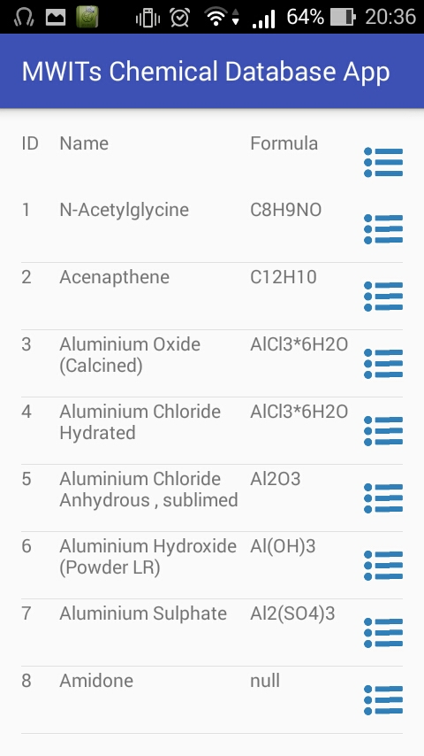
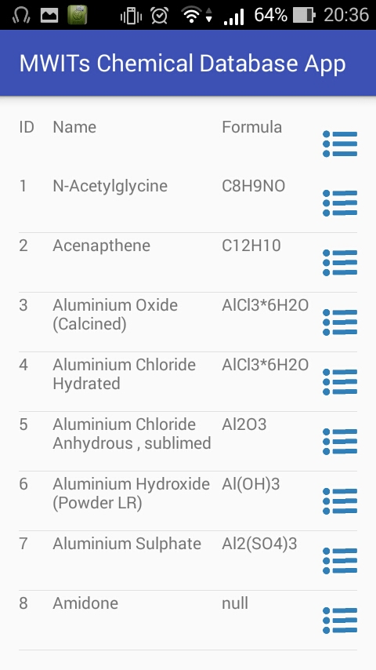

Who
This project was done in a team of three high school students from Mahidol Wittayanusorn School, Nakhon Pathom, Thailand:
- Arun Wongprommoon
- Poonyapas Sinpanyalert
- Phetprakai Siripowsuwankul
What
This project was part of the innovation subject of Mahidol Wittiyanusorn school. Students were tasked with making some innovative product, starting from prototyping to testing, within one academic semester. We thought of a computer science project that helps the school sort out its chemicals.
We are honored to have been selected as one of the best innovation subject teams in the school, and have presented this project to Thailand's Minister of Education.
Where
This project was done in Mahidol Wittayanusorn School.
When
October 2015 - March 2016 (1 academic semester)
Why
Currently, the chemistry department of the school keeps its stock via pen and paper. Students come in, ask a teacher to request a specific chemical, and writes down some details of the borrowing. The chemistry department itself also didn't keep track of the amount of chemicals in the stock and it was hard to determine whether they needed to order new chemicals and when. We wanted to make the process more convenient and automated.
How
The application was coded in Java (Android), communicates with a server by making HTTP requests. The server hold databases with user information and chemical information, and processes the requests made by the client using PHP and SQL.